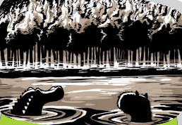

Los guaraníes creen que mi origen se remonta a un momento en que la Tierra habría chocado con el Sol y se produjo un gran incendio.
Ese día los hombres que se hundieron en el río para no quemarse se convirtieron en yacarés y carpinchos.